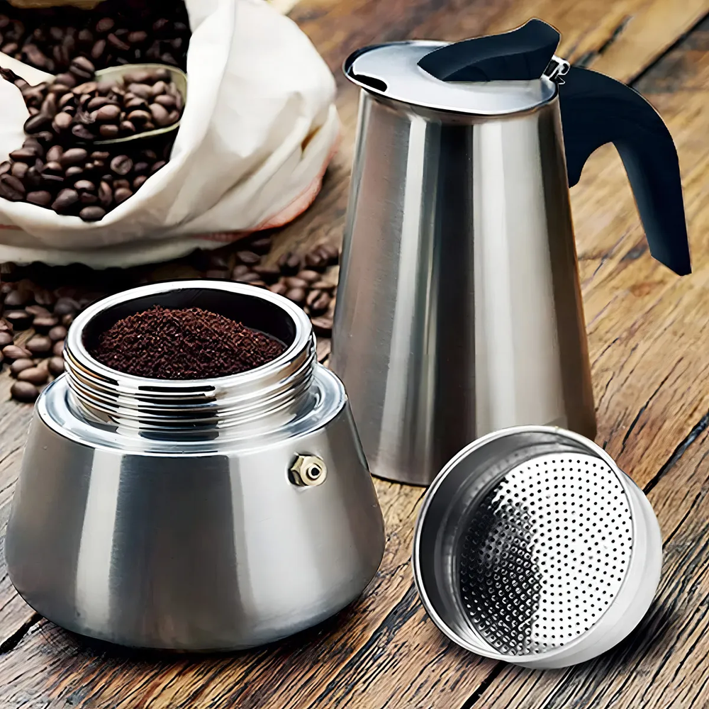

Cafeteira Italiana Inox: O Segredo do Café Perfeito e Prático em Casa
Por Equipe AchadoCerto.VIP | Gastronomia & Estilo de Vida

Você já se perguntou por que o café de cafeteria parece ter um sabor mais "vivo" e encorpado? O segredo muitas vezes não está apenas no grão, mas no método de preparo. A Cafeteira Italiana em Inox (estilo Moka) é a escolha definitiva para quem busca elevar o nível do café matinal com praticidade e elegância.
A Ciência do Sabor Superior
Diferente dos filtros de papel, que retêm os óleos essenciais do café, a cafeteira italiana utiliza a pressão do vapor para extrair o máximo de sabor. O resultado é uma bebida densa, aromática e com aquela doçura natural que você só encontra em métodos de extração por pressão.
Este modelo em Aço Inox de grau alimentício é um salto de qualidade em relação às versões tradicionais de alumínio. Além de ser mais durável e resistente a manchas, o inox não altera o sabor da bebida e é compatível com **fogões de indução**, elétricos e a gás.
🎯 Achado VIP: Cafeteira Italiana Inox
Capacidade para 6 xícaras (300ml) — O café perfeito em 5 minutos!
APROVEITAR OFERTA NO MERCADO LIVRECOMPRA GARANTIDA | ESTOQUE FULL | FRETE GRÁTIS
Praticidade no Dia a Dia
Fazer café nela é um ritual simples e satisfatório. Basta colocar água no reservatório inferior, o pó no funil central e levar ao fogo. Em menos de 5 minutos, o aroma invade a casa. É a solução ideal para quem quer um café de alta qualidade sem a complexidade ou o custo de máquinas de espresso profissionais.
Por que este modelo é um "Achado Certo"?
- Versatilidade Total: Funciona em qualquer tipo de fogão, inclusive indução.
- Durabilidade Extrema: O aço inox garante que ela dure por muitos anos sem oxidar.
- Economia: Dispensa o uso de filtros de papel descartáveis, sendo mais sustentável e barata a longo prazo.
- Design Portátil: Perfeita para levar em viagens ou acampamentos e nunca ficar sem um bom café.
Dica VIP: Para um café ainda mais saboroso, utilize água já pré-aquecida no reservatório e use uma moagem média-grossa. Isso evita que o pó queime e garante uma extração perfeita.